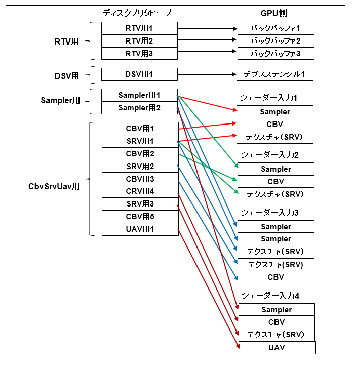

＊レンダーターゲットビュー用の窓口（RTV） ＊デプスステンシルビュー用の窓口（DSV） ＊サンプラー用の窓口（SAMPLER） ＊コンスタントバッファ、シェーダリソース、順序指定されないアクセスビュー用の窓口（CBV_SRV_UAV）

図1105a
このサンプルではRTV用しか使いません。RTVはフレームの数だけ作成します。このサンプルでは2つです。
// レンダリングターゲットビュー
m_rtvHeap = DescriptorHeap::CreateRtvHeap(m_frameCount);
m_rtvDescriptorSize = GetID3D12Device()->GetDescriptorHandleIncrementSize(D3D12_DESCRIPTOR_HEAP_TYPE_RTV);
namespace DescriptorHeap {
static inline ComPtr<ID3D12DescriptorHeap> CreateDirect(const D3D12_DESCRIPTOR_HEAP_DESC& desc) {
auto Dev = App::GetID3D12Device();
ComPtr<ID3D12DescriptorHeap> Ret;
ThrowIfFailed(Dev->CreateDescriptorHeap(&desc, IID_PPV_ARGS(&Ret)),
L"デスクプリタヒープの作成に失敗しました",
L"Dev->GetDevice()->CreateDescriptorHeap()",
L"DescriptorHeap::CreateDirect()"
);
return Ret;
}
static inline ComPtr<ID3D12DescriptorHeap> CreateRtvHeap(UINT FrameCount) {
//Rtvデスクプリタヒープ
D3D12_DESCRIPTOR_HEAP_DESC rtvHeapDesc = {};
rtvHeapDesc.NumDescriptors = FrameCount;
rtvHeapDesc.Type = D3D12_DESCRIPTOR_HEAP_TYPE_RTV;
rtvHeapDesc.Flags = D3D12_DESCRIPTOR_HEAP_FLAG_NONE;
return CreateDirect(rtvHeapDesc);
}
//中略
}
rtvHeapDesc.NumDescriptors = FrameCount;
rtvHeapDesc.Type = D3D12_DESCRIPTOR_HEAP_TYPE_RTV;
rtvHeapDesc.Flags = D3D12_DESCRIPTOR_HEAP_FLAG_NONE;
return CreateDirect(rtvHeapDesc);
auto Dev = App::GetID3D12Device();
ComPtr<ID3D12DescriptorHeap> Ret;
ThrowIfFailed(Dev->CreateDescriptorHeap(&desc, IID_PPV_ARGS(&Ret)),
L"デスクプリタヒープの作成に失敗しました",
L"Dev->GetDevice()->CreateDescriptorHeap()",
L"DescriptorHeap::CreateDirect()"
);
return Ret;
void Scene::OnInit() {
ResetActiveDx12Device<GameDivece>(2);
}
m_rtvHeap = DescriptorHeap::CreateRtvHeap(m_frameCount);
m_rtvDescriptorSize = GetID3D12Device()->GetDescriptorHandleIncrementSize(D3D12_DESCRIPTOR_HEAP_TYPE_RTV);
CD3DX12_CPU_DESCRIPTOR_HANDLE rtvHandle(m_rtvHeap->GetCPUDescriptorHandleForHeapStart());
for (UINT n = 0; n < m_frameCount; n++)
{
ThrowIfFailed(m_swapChain->GetBuffer(n, IID_PPV_ARGS(&m_renderTargets[n])));
m_device->CreateRenderTargetView(m_renderTargets[n].Get(), nullptr, rtvHandle);
rtvHandle.Offset(1, m_rtvDescriptorSize);
//コマンドアロケータ
m_commandAllocators[n] = CommandAllocator::CreateDefault();
}
CD3DX12_CPU_DESCRIPTOR_HANDLE rtvHandle(m_rtvHeap->GetCPUDescriptorHandleForHeapStart());
for (UINT n = 0; n < m_frameCount; n++)
ThrowIfFailed(m_swapChain->GetBuffer(n, IID_PPV_ARGS(&m_renderTargets[n])));
m_device->CreateRenderTargetView(m_renderTargets[n].Get(), nullptr, rtvHandle);
rtvHandle.Offset(1, m_rtvDescriptorSize);
//コマンドアロケータ
m_commandAllocators[n] = CommandAllocator::CreateDefault();
namespace CommandAllocator {
static inline ComPtr<ID3D12CommandAllocator> CreateDefault() {
//デバイスの取得
auto Dev = App::GetID3D12Device();
ComPtr<ID3D12CommandAllocator> allocator;
ThrowIfFailed(
Dev->CreateCommandAllocator(D3D12_COMMAND_LIST_TYPE_DIRECT,IID_PPV_ARGS(&allocator)),
L"コマンドアロケータの作成に失敗しました",
L"Dev->CreateCommandAllocator()",
L"CommandAllocator::CreateDefault()"
);
return allocator;
}
}